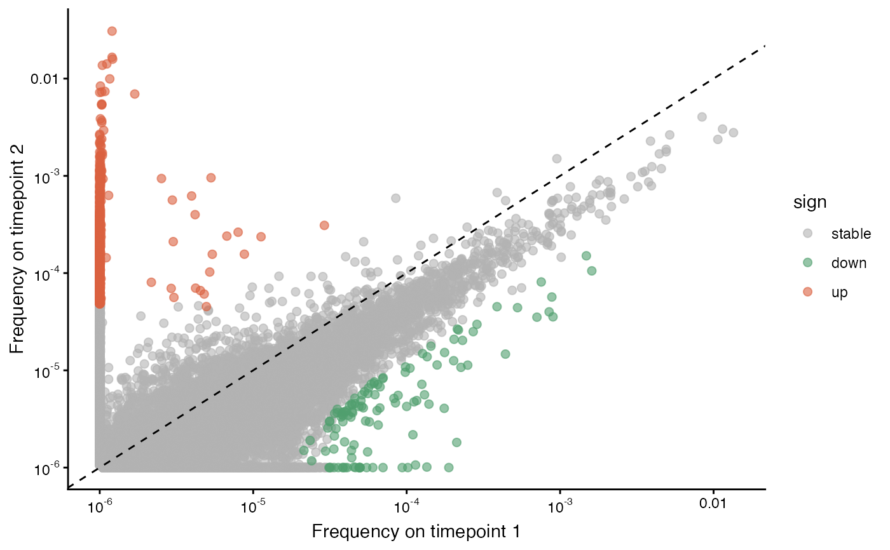

Scatterplot of TCR clone read fraction of clones between two samples
plot_sample_vs_sample.Rd![[Experimental]](figures/lifecycle-experimental.svg)
This function returns a scatterplot of read frequencies of TCRs between two samples. It labels clones that expand (orange) or contract (green) based on their single-chain pseudo-bulk frequencies (beta chain frequency is default).
Usage
plot_sample_vs_sample(
data1,
data2,
chain = c("beta", "alpha"),
log2fc_cutoff = 3,
sem_cutoff = 2.5,
pseudo1 = 1e-06,
pseudo2 = 1e-06,
labelx = "Frequency on timepoint 1",
labely = "Frequency on timepoint 2",
return_data = FALSE,
smooth_sem = c("window", "none"),
window_size = 30,
end_window_size = 5,
highlight_clones = c(),
highlight_color = "red",
interactive = FALSE
)Arguments
- data1
a list of three data frames (alpha, beta, and paired) for one sample
- data2
a list of three data frames (alpha, beta, and paired) for one sample
- chain
which chain to plot, alpha or beta (default is beta)
- log2fc_cutoff
the log2 fold-change cutoff to call a TCR up- or down-regulated (default 3)
- sem_cutoff
the standard-error of the mean (SEM) to use as a cutoff in calling clones expanded or contracted (default is 2.5)
- pseudo1
the pseudocount to add to read frequency of the first sample (default is
10^-6).- pseudo2
the pseudocount to add to read frequency of the second sample (default is
10^-6).- labelx
the label for the x-axis
- labely
the label for the y-axis
- return_data
if TRUE, return the data frame used to make the plot rather than the plot itself.
- smooth_sem
if "window", then SEM values for clones will be smoothed by comparing to other clones within a window of similar frequencies. Otherwise, no smoothing. (default is "window")
- window_size
the number of similar clones to include within a window.
- end_window_size
the number of clones to include in a window at the ends (most and least frequent)
- highlight_clones
a vector of nucleotides of clones to highlight
- highlight_color
a color for highlighted clones
- interactive
whether to return an interactive plot (default FALSE)
Value
A scatterplot (ggplot object) with read frequencies (proportions), colored by whether each TCR is up-regulated, down-regulated, or neither, given the log2 fold-change cutoff.
If return_data is TRUE, the data frame used to make the plot is returned instead of the plot.
Details
You may call get_expanded_clones() with the same arguments for
log2fc_cutoff and sem_cutoff in order to get data frames with
expanded and contracted clones (both single-chain and corresponding αβ TCR pairs).
To call expanded and contracted clonotypes from TIRTL-seq data, we calculated mean frequency and standard error of the mean (SEM) for each TCRβ chain over all wells. We call clones significantly expanded or contracted between time points if there is a log2 fold-change log2FC > 3 between average frequencies and the difference between average frequencies exceeds 5 SEM intervals. This matches the analysis in Pogorelyy & Kirk et al. (2025).
Note: For each TCR, we actually calculate two SEMs, one for each timepoint/sample.
To calculate 5 SEM intervals, we multiply each SEM by 2.5 and sum them. The sem_cutoff
argument controls this value, which is why the default is 2.5.
References
Pogorelyy, M, Kirk, A, Adhikari, S et al. (2025). "TIRTL-seq: deep, quantitative and affordable paired TCR repertoire sequencing." Nature Methods, 23, 56–64. doi:10.1038/s41592-025-02907-9
See also
Other longitudinal:
get_expanded_clones(),
plot_clone_size_across_samples()
Examples
load_example_data(dataset = "SJTRC_minimal")
#> Example data already loaded into object: 'SJTRC_minimal'
plot_sample_vs_sample(SJTRC_minimal$data$cd8_tp1_v2, SJTRC_minimal$data$cd8_tp2_v2, chain = "beta")
#> Warning: Ignoring unknown aesthetics: text
